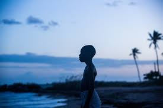

My favorite music genres are Hip-Hop, RnB, Indie, Alternative RnB, and "Avante-Garde Rap".
Here are some of my favorite albums (in no particular order) of all time:
There are too many more that I want to list but it would take up the whole screen...
I am a sucker for psychological thrillers/horrors. Occasionally though, I love watching comedies/sitcoms and certain animated shows.
Here are some of my favorite films/tv shows of all time:
Hover over me!
These video games are what I grew up on. Nowadays it's harder to find time to play them ;[